Tracking de 1 ponto
Introdução
Se ainda não leu, por favor comece pelo texto Recomendações e Introdução. Neste texto vamos utilizar o ficheiro 1ponto.mp4 (dados e ficheiro disponibilizados nesse texto) e é fortemente recomendado que aumente a memória RAM disponível para tarefas de tracking e edição de vídeo (explicação no mesmo texto).
Geralmente, o tracking de 1 ponto é uma técnica simples e rápida. É algo limitada (apenas permite fazer tracking em X e Y) mas suficiente para implementar alguns efeitos interessantes. Como só trabalhamos com 1 ponto, não existe cálculo da profundidade.
Início
O primeiro passo foi a conversão do vídeo para uma sequência de imagens. No nosso caso, foram utilizadas 125 frames (5 segundos), desde a frame 75 até à 200, convertidas para Targa Raw para não perder qualquer pixel com compressão.
O segundo passo foi a importação da sequência de imagens para o Movie Clip Editor. Selecione o Movie Clip Editor, clique em Open. Selecione a primeira frame da sequência e clique em Open Clip.


Acertámos as configurações de renderização de acordo com os ficheiros de imagem e vídeo original (25 FPS, 1920x1080) e definimos a timeline para 125 frames (Start no 1 e End no 125) pois vamos trabalhar com 125 frames.
Através do Play Animation (Alt+A) inserimos a frames na cache. A imagem abaixo foi capturada na frame 51. A linha violeta mostra as frames armazenadas em memória. A área mais clara corresponde às frames em memória e a área mais escura corresponde às frames que ainda não estão e memória. Após fazer Play Animation, deverá ficar apenas com uma linha violeta clara o que significa que todas as frames ficaram em memória. É óbvio que a memória disponível tem impacto nesta etapa, o ideal é ter memória disponível suficiente para que todas as frames fiquem em cache e, assim, o processo é mais rápido e suave.
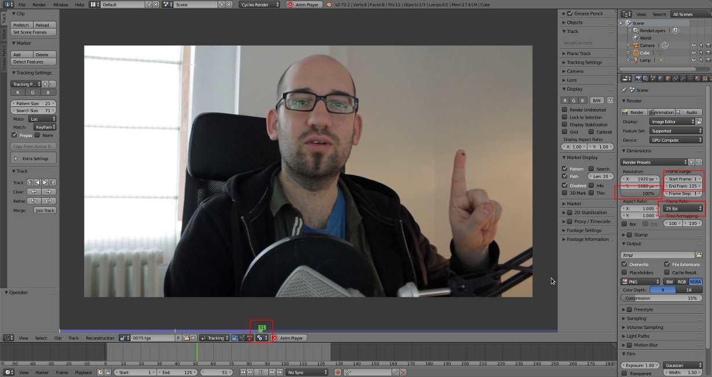Tracking
Coloque-se na primeira frame a partir da qual pretende fazer tracking. No nosso caso, é a partir da frame 1 e, portanto, colocámos a timeline na frame 1.
Clique no botão Add do painel Marker, disponível na barra de ferramentas (barra à esquerda) e clique no local onde pretende fazer o tracking. Como pretendemos fazer tracking ao ponto negro no dedo, clicámos no mesmo. Também pode adicionar markers pressionando o CTRL e clicando com o BER na imagem.
Pode reposicionar o marker selecionado clicando em G. Para obter maior precisão, durante a manipulação pressione o Shift.
O marker visível é constituído por 2 elemento centrais: anchor point e área de pattern. O anchor point é o ponto central que irá ser seguido durante o processo de tracking. Na janela de Track, disponível na barra de propriedades (barra à direita), é representado pela cruz amarela. A área de pattern é o contexto que define e delimita o anchor point. Pode redimensionar (S) a area pattern (não pode redimensionar o ponto...) alterando o aspeto na janela Track e alterando o padrão que irá ser procurado pelo Blender durante o tracking. É especialmente útil quando a imagem tem demasiado blur.
Posicione o seu marker de forma similar à da imagem abaixo.
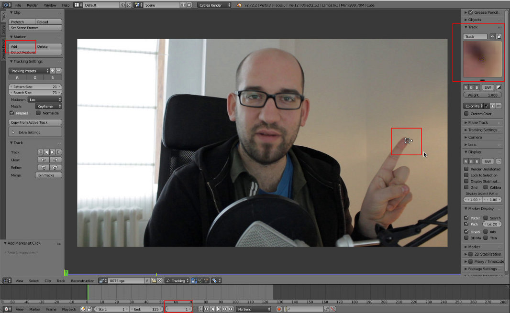Para fazer tracking existem 4 botões disponíveis. Os dois centrais permitem fazer tracking automático (frames seguintes ou frames anteriores). Os dois nas extremidades avançam 1 frame de cada vez (frame seguinte ou frame anterior).
Clique 5 vezes para fazer tracking 1 frame de cada vez nas frames seguintes (botão mais à direita). Pode ver na imagem que a timeline avançou até à frame 6.
No tracking, surgiu uma linha vermelha com vários pontos. A linha mostra o movimento do marker, os pontos são a localização do anchor point em cada uma das frames anteriores.
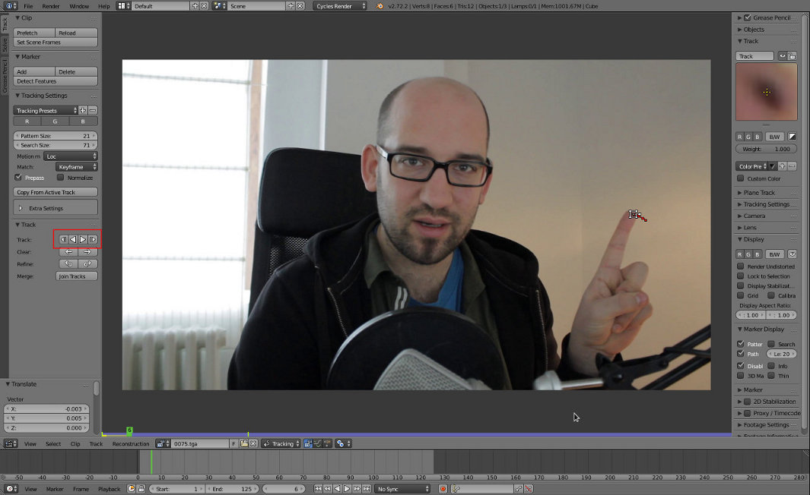Na barra de propriedades, ative a caixa Search para ver a àrea de Search. Esta caixa delimita a àrea em que o tracker procura o pattern. Quando avança uma frame, o tracker procura na área de Search a área de pattern e localiza o anchor point. Esta área de Search pode ser redimensionada mas aumentar significa que existe mais imagem para processar (utiliza mais memória e mais processador, mais lento). No nosso exemplo, esta área de Search deverá ser suficiente para fazer um tracking rápido e fácil.
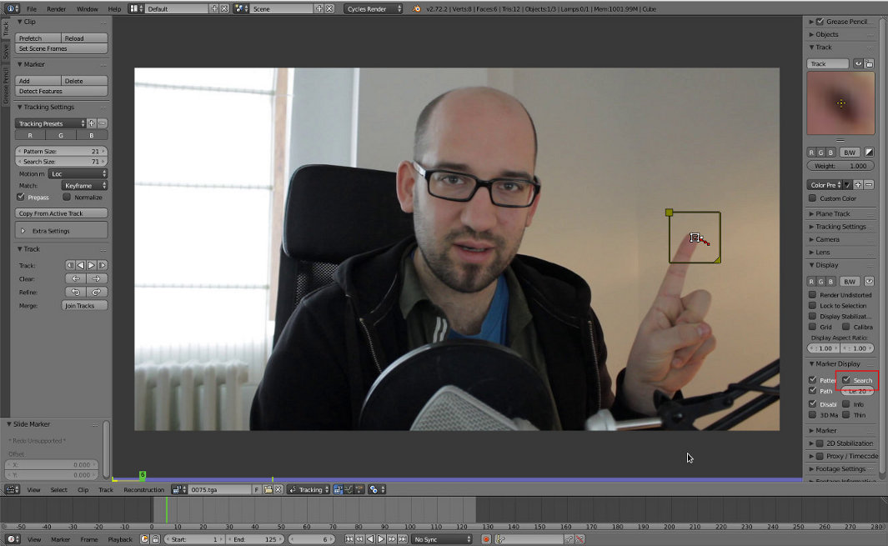No painel Track (barra de ferramentas), clique no segundo botão a contar da direita para fazer tracking automático nas frames seguintes. No nosso caso, o tracking foi feito atéo ao final das 125 frames. Faça ALT+A ou utilize a timeline para ver o movimento do marker durante a sequência.
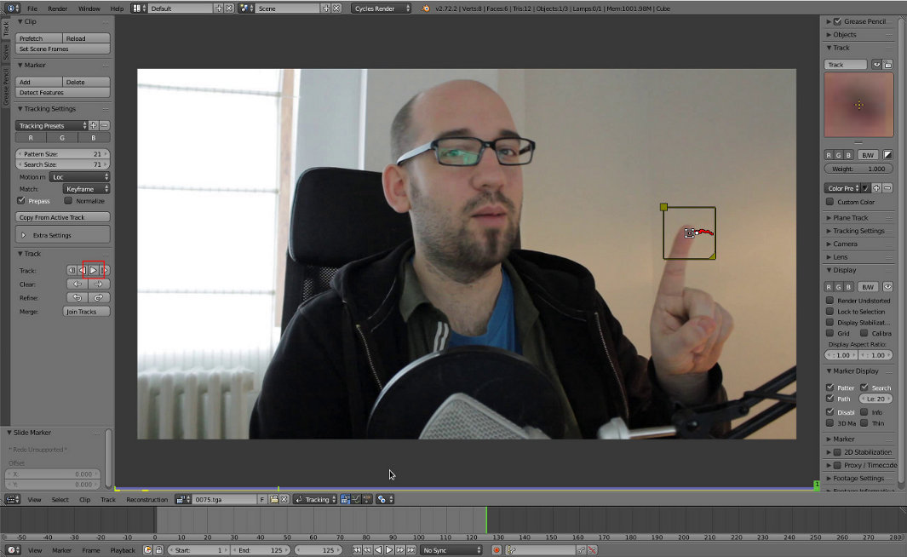Algumas palavras mais sobre o tracking
Durante o tracking, é relativamente comum o marker perder-se e não conseguir acompanhar a imagem. No exemplo acima isso não aconteceu e, portanto, vamos criar o problema para perceber como resolver.
Não precisa de fazer os passos seguintes...
O marker do exemplo acima foi eliminado (botão Delete do painel Marker, disponível na barra de ferramentas) e inserido um novo marker no mesmo local. A área de Search deste novo marker foi reduzida substancialmente. Isto significa que o Blender, sempre que avançar uma frame, tem agora uma área mais reduzida onde procurar o pattern. Por outras palavras, entre as duas frames a diferença de localização da área pattern não pode ser superior à área de Search.
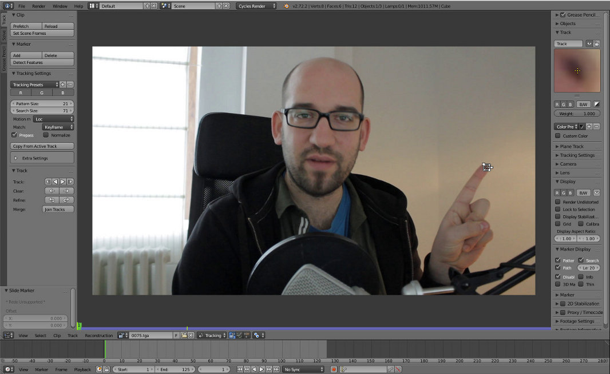Depois de clicado o botão tracking automático, o tracking parou logo na frame 2. Isto significa que o marker perdeu-se. Na janela de Track, disponível na barra de propriedades, não existe a cruz amarela e não é visível qualquer imagem. Isto significa que a área de pattern saiu da área de Search. Movimentos bruscos e blur contribuem decisivamente para este problema.
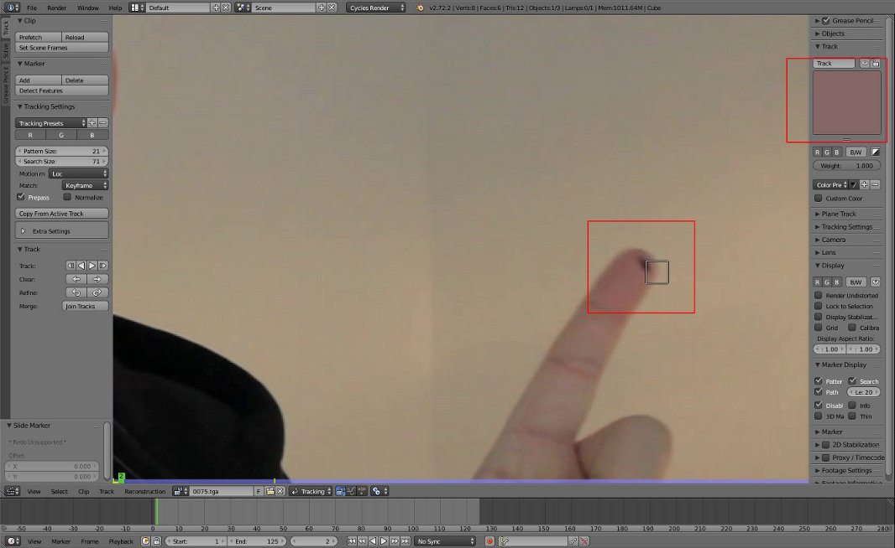Como resolver o problema? Posicionando manualmente o marker. Na frame 2, onde o marker desapareceu, selecione o marker e clique G. Pode agora reposicionar o marker colocando-o onde deveria estar se o tracking tivesse sido bem sucedido. Para obter maior precisão, durante a manipulação pressione o Shift.
Clicámos novamente no botão de tracking automático mas o tracking parou logo na frame 3. Claramente, a área de Search não é suficiente para acompanhar o movimento do dedo (e consequente movimento da área de pattern e do anchor point).
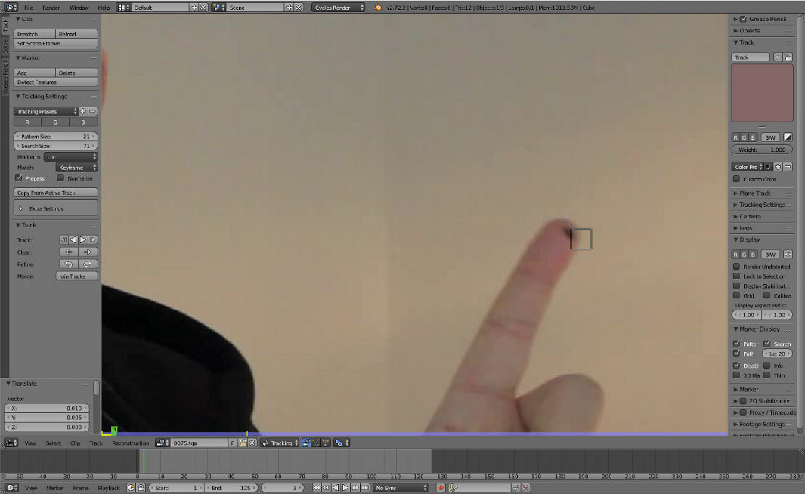Poderíamos voltar a fazer o mesmo que fizemos na frame anterior mas com esta dimensão na área de Search existe uma enorme probabilidade de termos de repetir o processo de posicionamento manual em todas as frames.
Voltámos à frame 2, última frame onde o marker existe, selecionámos a caixa que delimita a área de Search e aumentámos a sua dimensão. Para redimensionar a área de Search, clique no triângulo que existe no canto inferior direito da caixa.
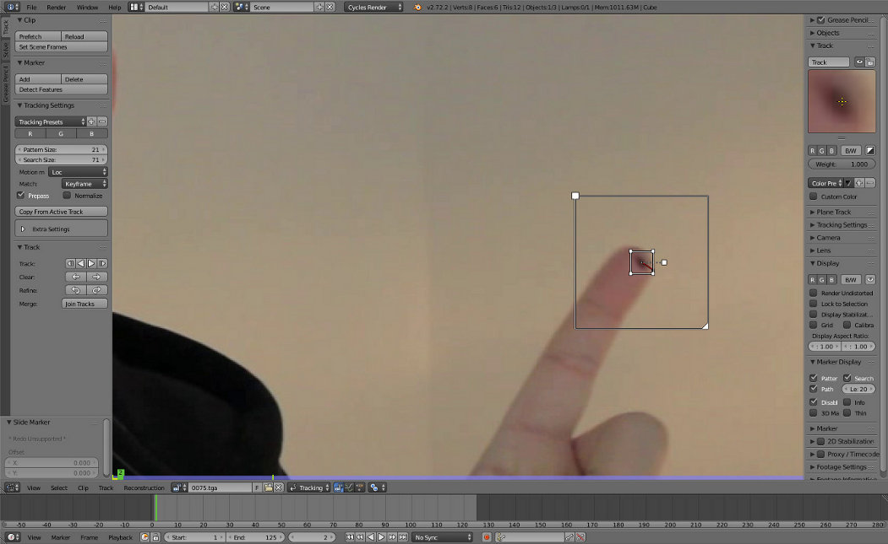Clicámos novamente no botão de tracking automático e o tracking seguiu até ao final da sequência. Repare que a dimensão da área de pattern não foi alterada. Ao aumentarmos a área de Search o Blender passou a ter um espaço suficiente para procurar as alterações. Neste caso foi simples mas, por vezes, movimentos muito bruscos e o blur só podem ser resolvidos com tracking manual (posicionamento manual em cada frame).
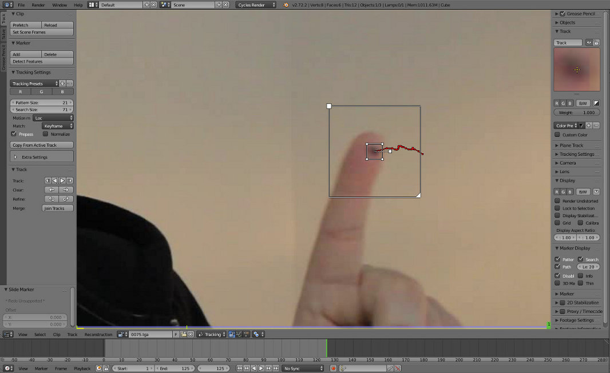Depois de concluído o tracking, recomendo que verifique a sua correção. Avance frame a frame para verificar localização do marker em cada frame. Se encontrar alguma frame onde o marker não está onde deveria estar, pode corrigir reposicionando o marker manualmente.
Matching
Concluído o processo de tracking, vamos importar o track (marker com tracking feito) para a janela 3D View e utilizar o tracker para criar um efeito.
Selecione o marker e escolha a opção Link Empty to Track (disponível no menu Reconstruction).
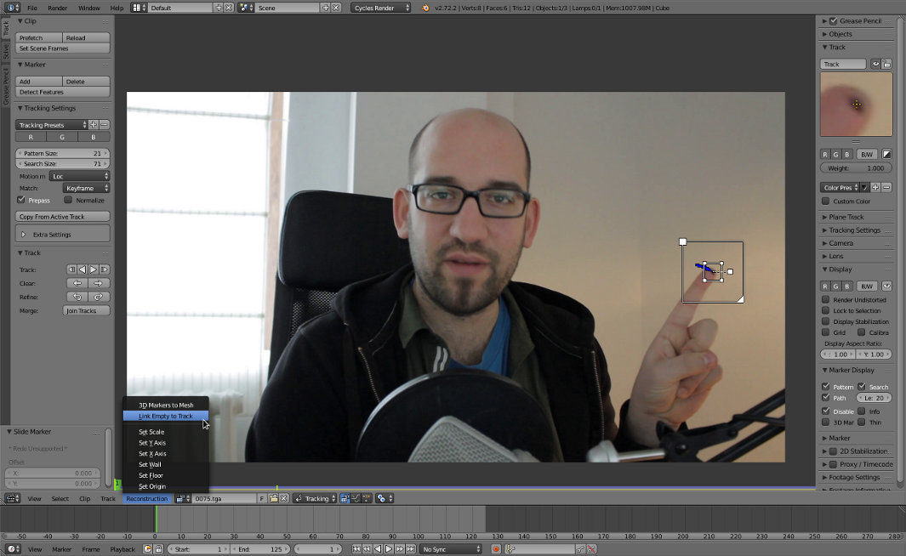Na janela 3D View encontra agora o cubo original (pode apagar) e um Empty animado e aparentado à câmara. Se fizer ALT+A irá ver que a câmara estática mas o Empty move-se.
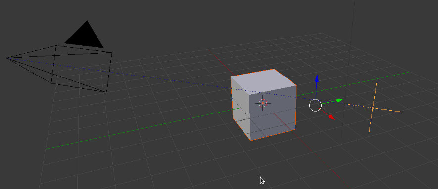Para facilitar a tarefa, selecione a câmara e remova as rotações (ALT+R) e a localização (ALT+G).
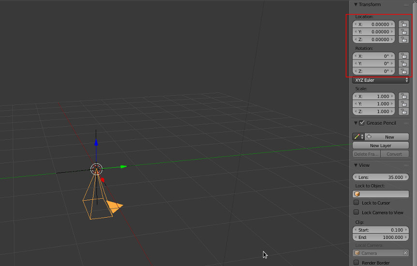Posicione a câmara de acordo com a imagem abaixo. A câmara tem uma rotação de 90º no eixo X e foi deslocada no eixo Y.
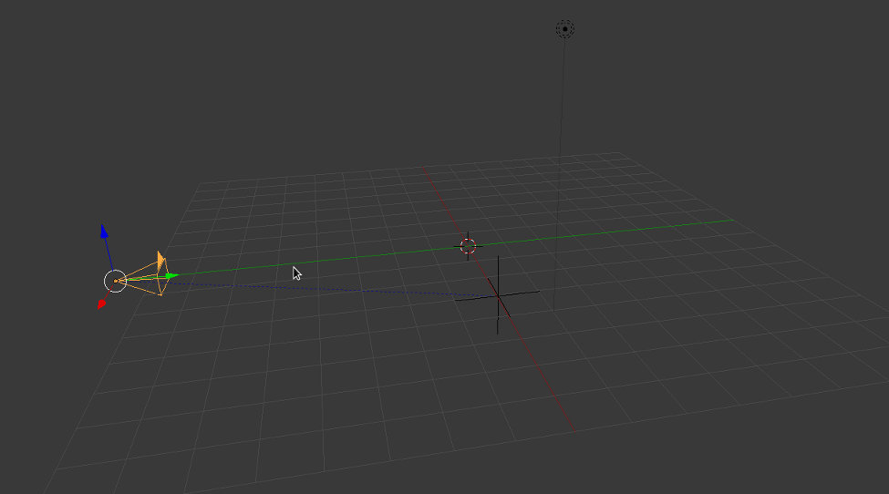Em visão de câmara deverá ver algo similar à imagem abaixo.
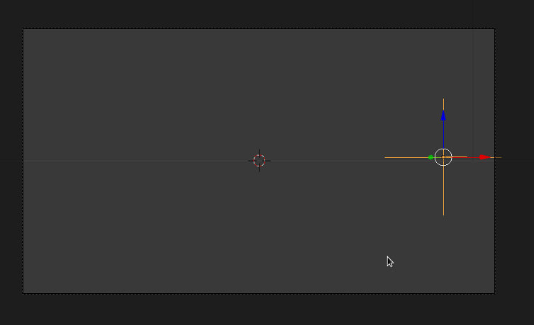Ative Background Image para a câmara, tipo Movie Clip, e selecione a sequência utilizada. Se fizer ALT+A deverá ver o Empty a acompanhar o dedo.
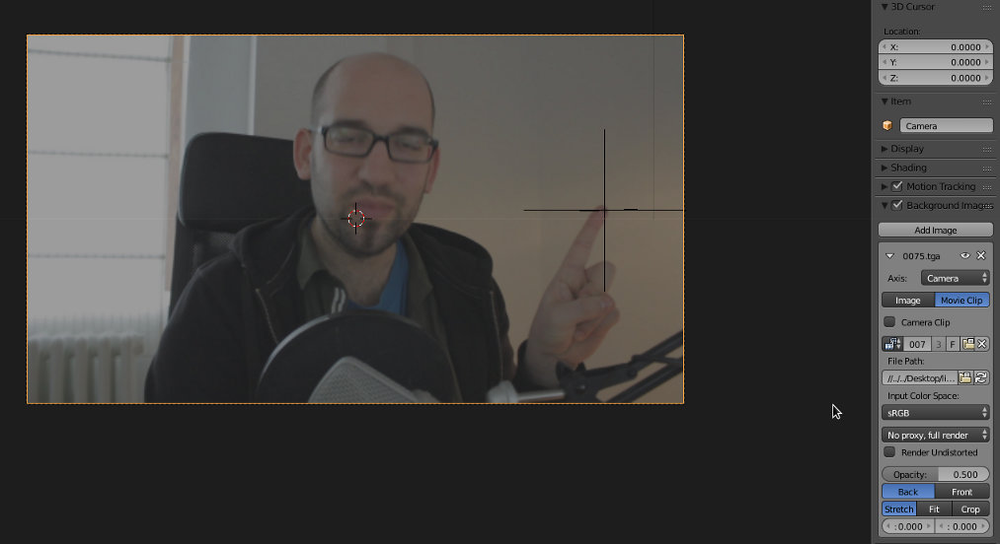Selecione o Empty, faça Shift+S e Cursor to Selected.
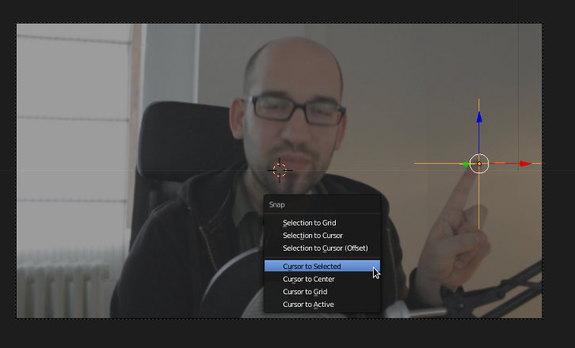Adicione um objeto.
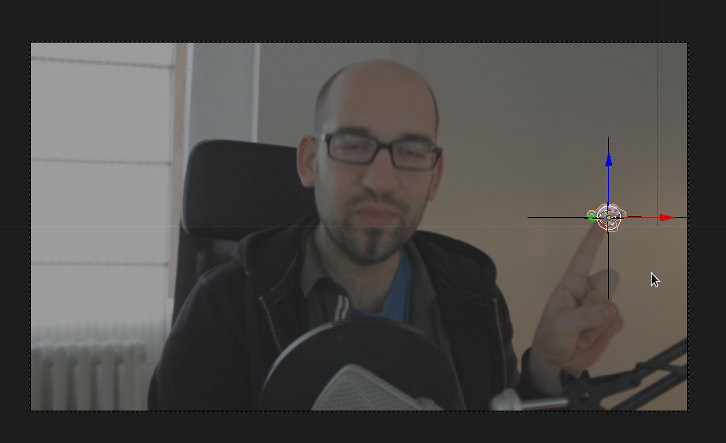Aparente o objeto ao Empty. Se fizer ALT+A deverá ver o objeto a seguir o dedo. Adicione materiais ao objeto.

Compositing
É agora altura de juntar a imagem renderizada à sequência original. Em Cycles, para não renderizar o fundo, ative a opção Trasnparent.
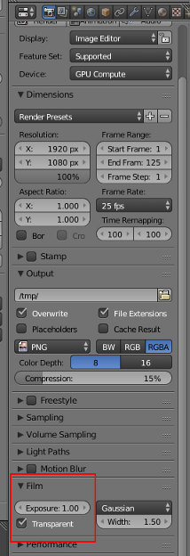No compositor de nós, utilize o Alpha Over para sobrepor a imagem renderizada (Suzanne) ao Movie Clip.
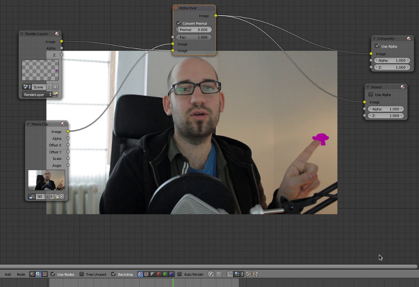Pode adicionar efeitos suplementares (um blur na imagem renderizada, na Suzanne, é altamente recomendado) e exportar o seu vídeo.